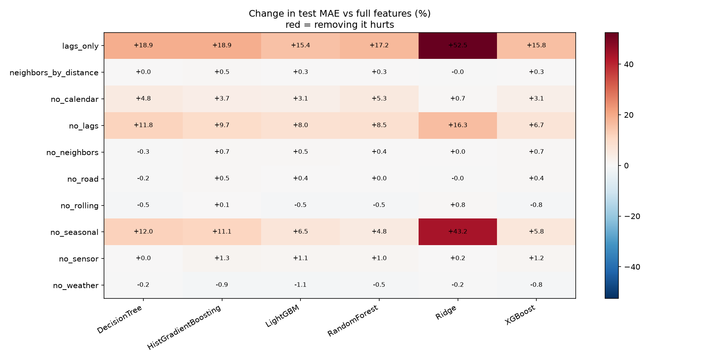
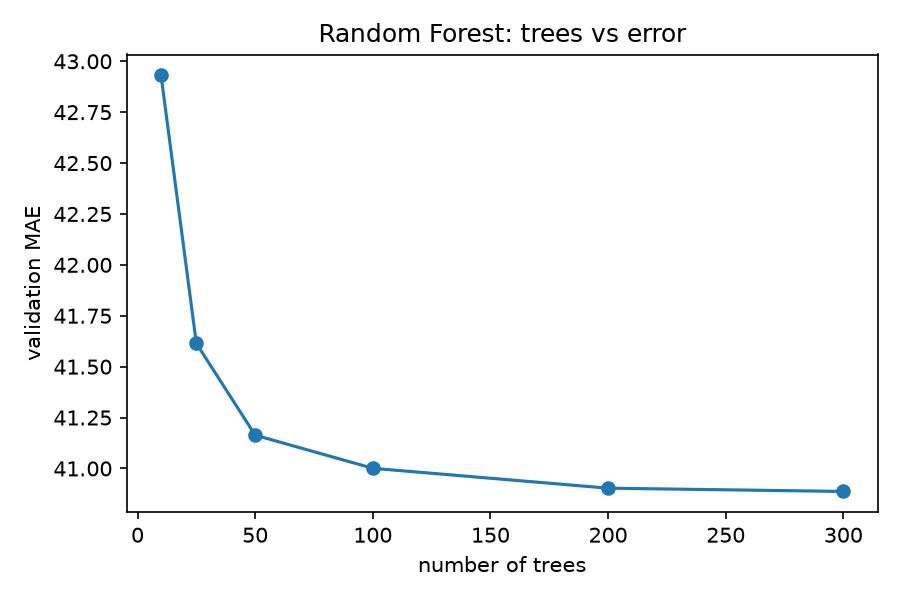
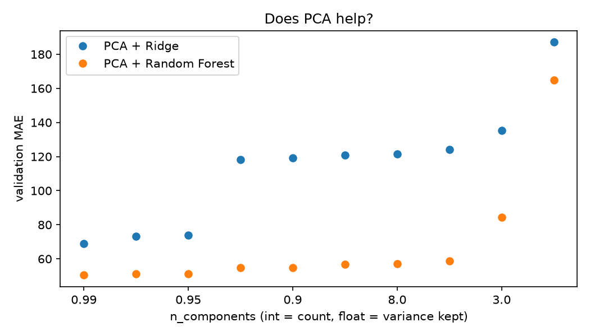
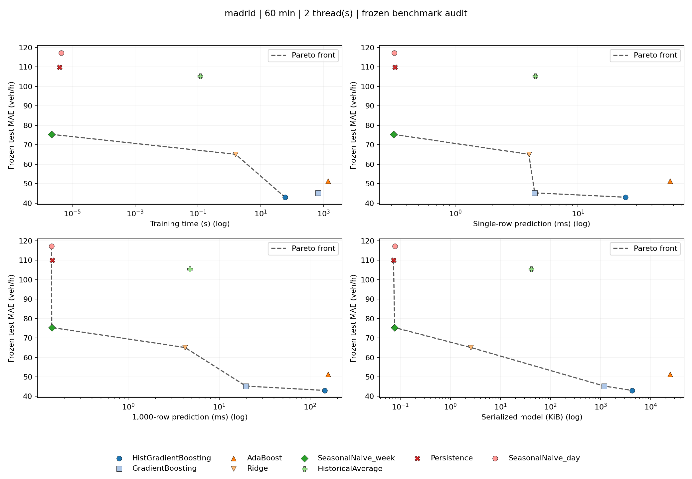
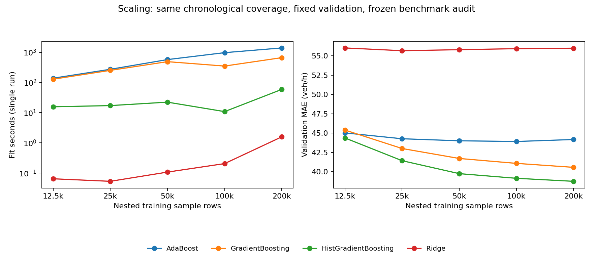

Multi-Sensor Urban Traffic Flow Forecasting
Forecasting road-sensor traffic intensity 60 minutes ahead using strictly leakage-safe historical features, comparing 5 baselines against Decision Tree, Random Forest, PCA pipelines, and 5 gradient boosting families.
Team Contributions
4 ContributorsDataset & Safeguards
46/46 Tests Passing- Dataset: Madrid Traffic Dataset (MTD, Mendeley V4), June 2022 – Oct 2023 (517 days, 60 sensors, veh/h).
- Temporal Split: Strict 70 / 15 / 15 chronological train / validation / test split with embargo; no random shuffling.
- Zero Leakage: All lags, rolling stats, neighbor correlations, and sensor statistics fit on training history only.
- 32 Features: 7 short-term lags, 2 seasonal anchors (yesterday / last week), 4 rolling stats, 4 calendar, 3 weather, 2 spatial neighbors, 2 sensor stats, 5 road attributes, plus slot/weekend/sensor ID.
- Metrics: MAE (primary), RMSE, R², and WAPE (plain MAPE avoided due to near-zero night-time flows).
All 14 Benchmarked Models (Test MAE, veh/h)
Model Leaderboard & Hyperparameter Tuning
Click any model row to inspect its frozen best_params and full validation grid search.
| Model | Family | Owner | Test MAE | Test RMSE | Test R² | WAPE | Val MAE | vs. Ridge | Train (s) | Size |
|---|
Interactive Madrid Sensor Explorer
Inspect real 24-hour traffic history and 60-minute ahead baseline forecasts across all 60 Madrid sensors.
Madrid Sensor Map (60 Active)
Click a sensorAnalysis A: Feature Group Ablation
Percentage change in test MAE when removing each feature group (100k train rows, 60-min horizon). Positive red = removing it hurts.
Interactive Ablation Matrix (Δ Test MAE %)
6 Tuned Models × 10 VariantsKey Findings
Owner: Pragun- Temporal core is indispensable: Dropping
lagshurts all models (+6.7% to +16.3%), and droppingseasonalhurts trees (+4.8% to +12.0%) and Ridge (+43.2%). Usinglags_onlyraises MAE by +15.4% to +52.5%. - Calendar helps nonlinear models: Removing
calendarraises tree/boosting MAE by +3.1% to +5.3% vs. +0.7% for Ridge. - Spatial & static features are secondary: Dropping
sensor(+1.0%–1.3%),neighbors(+0.4%–0.7%), orroad(+0.0%–0.5%) has mild impact on seen sensors; correlation neighbors slightly beat distance. - Weather & rolling stats can be pruned: Dropping
weatherimproves all 6 models (-0.2% to -1.1%), and droppingrollingslightly improves RF, XGBoost, and LightGBM (-0.5% to -0.8%).
Generated Heatmap
analysis_a_ablation_heatmap.png
PCA Dimensionality Reduction & Analysis C Efficiency
Why unsupervised PCA hurts traffic forecasting, plus compute cost vs. accuracy trade-offs.
PCA Variance vs. Error
Owner: Pragun14 / 18 / 24 PCs capture 90% / 95% / 99% of variance, yet even at 99% variance PCA worsens Ridge (+18.0%) and Random Forest (+17.8%) by dropping small-variance lag differences and rotating axis-aligned splits.
Compact Random Forest Trade-off
~10× Smaller Model
Switching from 200 trees, min_samples_leaf=1 (~3.4 GB) to 100 trees, min_samples_leaf=5 trades only 0.39 veh/h val MAE (40.03 vs. 39.64) for a ~10× smaller UI-ready model and 2.4× faster training.


Analysis C: Compute Efficiency & Data Scaling (Madrid v2)
Owner: Bhavesh

Project Figures Gallery
All 24 diagnostic, tuning, and analysis figures generated across the team. Click any figure to zoom.